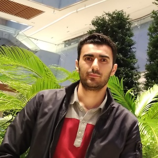

Workshop Organizers
The ACM MM 2025 Workshop is organized by the following experts in the field:
 Marcel Worring
Marcel WorringUniversity of Amsterdam
 Shin’ichi Satoh
Shin’ichi SatohNational Institute of Informatics
Tat-Seng Chua
National University of Singapore
National University of Singapore
 Lucia Vadicamo
Lucia VadicamoCNR-ISTI
 Laura Toni
Laura ToniUniversity College London
Nanne van Noord
University of Amsterdam
University of Amsterdam
Shuai Wang
University of Amsterdam
University of Amsterdam

Yassin Mohamadi
University of Amsterdam
University of Amsterdam